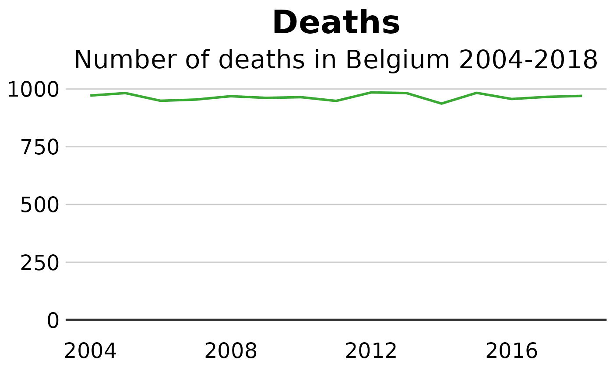
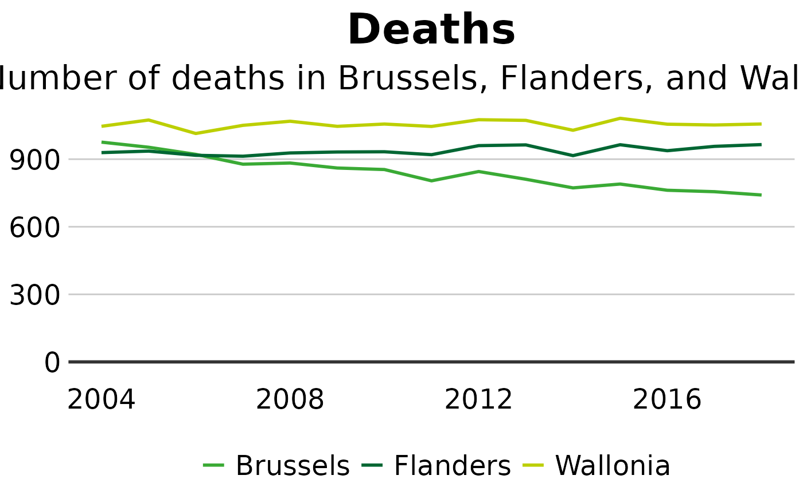

Creating a line chart
c-line-charts.Rmd#>
#> Attaching package: 'dplyr'
#> The following objects are masked from 'package:stats':
#>
#> filter, lag
#> The following objects are masked from 'package:base':
#>
#> intersect, setdiff, setequal, unionCreate a single line chart
#Data for chart from gapminder package
line_df <- dta %>%
filter(CAUSE == "ALL CAUSES" &
REGIOJ == "Belgium" &
MEASURE == "Deaths" &
METRIC == "Rate" &
AGEGRP == "ALL" &
SEX == "Both sexes")
#Get Sciensano color
col <- pal_sciensano()(1)
#Make plot
line <- ggplot(line_df, aes(x = YEAR, y = VAL_MEAN)) +
geom_line(colour = col, size = 1) +
geom_hline(yintercept = 0, size = 1, colour="#333333") +
sciensano_style() +
labs(title="Deaths",
subtitle = "Number of deaths in Belgium 2004-2018")
#> Warning in sciensano_style(): Please specify an available font
#> The first available font will be taken:
#> Using font:
Create a multiple line chart
#Data for chart from gapminder package
line_df <- dta %>%
filter(CAUSE == "ALL CAUSES" &
REGIOJ %in% c("Flanders", "Brussels", "Wallonia") &
MEASURE == "Deaths" &
METRIC == "Rate" &
AGEGRP == "ALL" &
SEX == "Both sexes")
#Make plot
line <- ggplot(line_df, aes(x = YEAR, y = VAL_MEAN, color = REGIOJ)) +
geom_line(size = 1) +
geom_hline(yintercept = 0, size = 1, colour="#333333") +
sciensano_style() +
scale_color_sciensano() +
labs(title="Deaths",
subtitle = "Number of deaths in Brussels, Flanders, and Wallonia")
#> Warning in sciensano_style(): Please specify an available font
#> The first available font will be taken:
#> Using font: